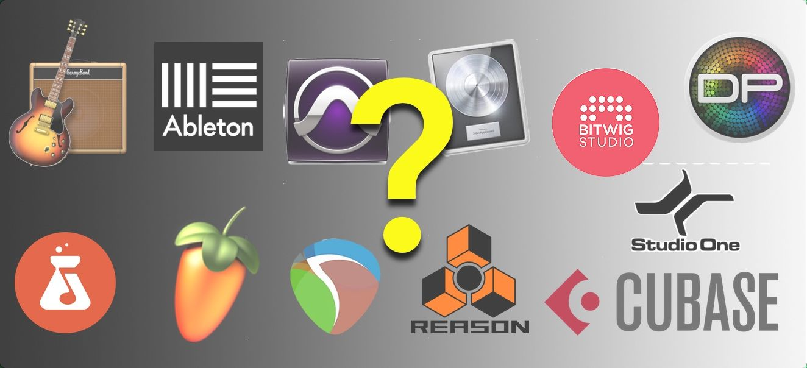
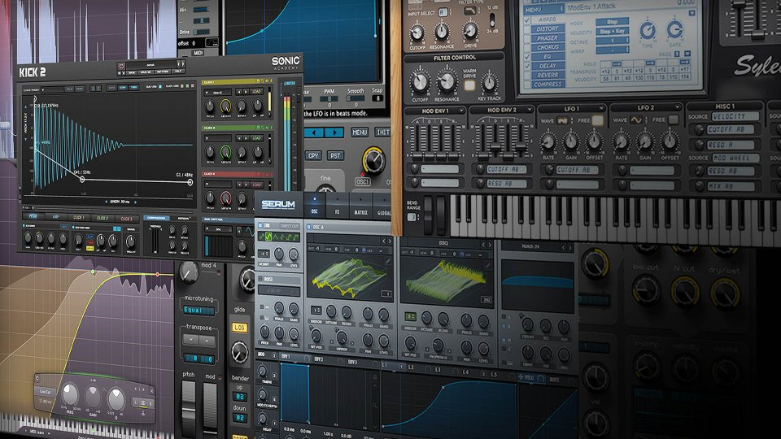
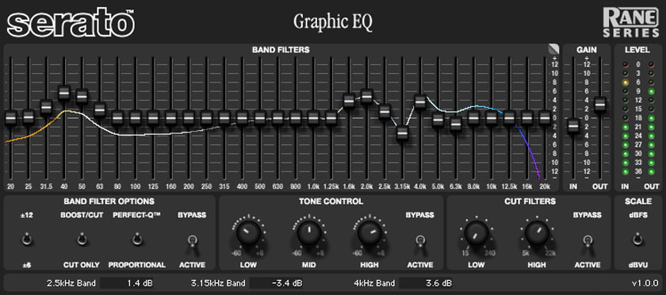
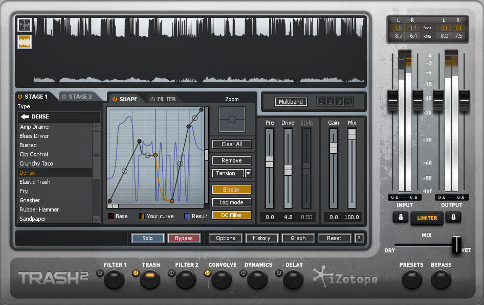
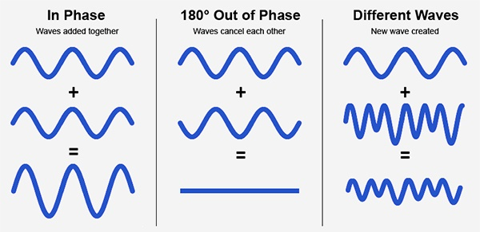
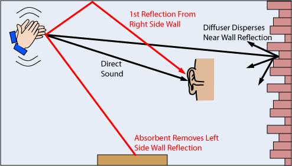

Getting Started
There are many DAW's that do a variety of stuff from mixing music, composing/sounddesign to videos, write in sheet music, and much more! The main DAW's are Reaper, Ableton, Logic, and FL Studio, these all preform the same the same functions and are extremely powerful, Reaper is the most versitile, with FL Studio following closely. If you want to go down the electronic music route, Ableton is the best introduction, FL Studio is a great starting DAW but also has a massive learning curve for those who like to customize their workflow. Logic stands out from these as it is unfortunately only available on MAC while the others are available reguardless. Of course there are many more DAW's to talk about, like Cubase which has great intigration for live instruments called "Sample Libraries" which we will get into shortly!
Types of VST's
VST's (Virtual Studio Technology) are the tools used in DAW's that serve many purposes. Plugins, synths, samplers, and sample engines, plugins are the most versatile as it includes an array of effects and distortions, along with that there are visual plugins to help mix audio. Synth have a wide variety of categories, from analog emulators of physical synths, to wave table synths that take the shape of sounds and uses them to create their own sounds, here is a list of the categories of synths. Samplers are tools used to take sounds in their engine and augment them in various ways, providing a lot of unique sounds. Sample players are fairly straight forward in that they take a folder of sounds and present them in a way that they can be played through midi, some sample players like SINEplayer and the OPUS engine by east west provide a user interface unique in that its used only with audio samples they provide. For example, SINEplayer by Orchestral Tools is used to play many instruments from their home page, their UI allows the user to load different articulations of the same instruments, along with loading different mic positions which change the sound drastically.
EQ
Despite its simple appearance, equalization is one of the most critical parts to working in any audio situation, whether its sound design, front of house engineering, or mixing songs. There are multiple types of EQs, dynamic, multiband, graphical and more! It is easy to use for beginners, and has a lot to learn as you learn more about production. It is essential for any sounds you create as it can make or ruin a good sound, through phase, or a muddy sound. EQ can be a very intimidating beast to conquer as learning the do's and don'ts takes years of experience and a great deal of time to learn, don't sleep on this incredible tool!
Distortion
This one is rather tricky to use since a beginner often uses it incorrectly or not at all. It is a super versatile tool to use which transforms a sound, adds harmonics, and saturation. The main problem in the beginning is that over saturated sounds have little to no dynamic range, meaning there is no punchiness to the sound, it all sounds the same as far as sound level. This can be fixed by mixing in the dry signal (no effects/no processing) with the distorted sound, this will add the dynamic range back while still retaining some of the distortion. Another issue is that it isn't used enough, it can be a very versatile tool to stick on to virtually any sound, vocals, instruments, and anything else. Multiband distortions can add harmonics to only specific frequency ranges, adding texture to sounds without changing them drastically, and saturation does a similar effect at the same level of subtleness.
Phase
One of the more important and complex things to know about is how sound waves work, the reason for this is because you might add two sounds together of equal volume, however the outcome is somehow more quiet? This is a result of polarity and how sound interacts with each other, soundwaves naturally transition in and out of phase all around you. By adding a sound with a positive phase, and one with a negative phase, they will equal out and you will get a physically silent noise, this isn't a mind game, it just doesn't exist anymore. Since production involves processing sounds constantly, it's important to be aware of the phase your song creates, things like stacking multiple snares to get a beefier snare, if the phases are not both positive, you will end up with a weaker snare instead. You can on most DAW's click one button and reverse the polarity on one of the two snares, making them both positive (or negative, positive and negative are both good, but neutral is bad); however, when using more complicated sounds, simply switching the polarity of one audio sample won't suffice anymore, that's when more complicated techniques come into play. Lastly, the final reason why phase is such an important topic is that while you create and process sounds in headphones or speakers, they both have a stereo field of sound, meaning you have a left speaker, and a right speaker, so sound has depth and can surround you; however, a lot of consumers when checking out a song, for example on Tiktok or Instagram, will play that audio through their phone, and there is a good chance that speaker is mono, meaning both left and right speakers are being squished into one speaker now. This can cause some noticeable polarity issues as the right and left speakers now both fight over control for the single speaker, either they both work together and create a good song, or fight and end up making the song worse by some parts of the song being quiet, hollow or even completely inaudible.
How do you hear?
With you ears! In all seriousness, how you hear the sound matters a lot, so much in fact that there is a process of finalizing your music called “Mastering” and it is so delicate that it is the reason why studios exist in the first place. The shape of your room and the materials in it effect all how the sound is bounced around and reflected. One room with carpet everywhere, diffusion panels, and a bass trap will sound vastly more accurate than an untreated and irregularly shaped room. The reason for this is because as sounds are created, the spread and cover an entire room like a ripple in water, this is not an issue. The problem is when that sound bounces back from a wall, and is now clashing with a new sound that was just made. When it comes to getting an accurate sound, this is now a problem as the sound made .1 seconds ago is not being absorbed into the room and is now re-entering our ears at the same time as the new sound is also entering our ears. Treating a room helps prevent this by capturing that sound and turning its energy from air vibrations to object vibrations, allowing it to lessen the effect on the sound. Diffusion panels are my favorite method of doing this although it can't do it alone, the down side is that they are insanely expensive, but one of the many pros is that they are insanely cool to look at. How it works is that it takes the sound and “diffuses” it in many directions, scattering the sound. This makes it so that the sound can not bunch together as frequently, leaving for a more equal sound environment. Another very common and cheap method is sound panels, which are usually foam pads that absorb the energy of sound and release a weaker energy into the room, very very effective but again will not solve the issue on it's own. The last common one is bass traps, they are essentially larger sound panels designed specifically to capture the low end or “bass” of sound. This is all complicated right? Well it's also expensive too! As is everything in the audio world, taking loans for gear is definitely not uncommon. My personal approach, if you are setting up in your room, is to get a decent pair of headphones. Headphones will make a secure room environment within your ears, so no need to worry about your room! Audeze (their cheapest pair) are what I personally recommend, although still expensive, they will ensure you are getting the best sound for your dollar. Along with that, the ones I linked are less than 20 ohms (Ω or “impedance”) meaning they will have enough power to work from any device including your phone! Normally if a headphones have above 100Ω, that means they will struggle to get enough power from more common devices like laptops and phones, leaving you with an underpowered headphones which can distort the audio and cause major listening problems for mixing! 32 ohms is about the standard for most headphones, which is why you can use them pretty much anywhere without an AMP (provides extra power).
You made it!
Congratulations! You are still really far from making your first decent song, for instance I didn't mention LUFS, decibels, mastering and more BUT now you can walk away knowing more than you started with, and that is what's important to keep with you. You will never know everything about anything, but all you have to know is that you know more than you did last year, and that's all that matters in the music industry!